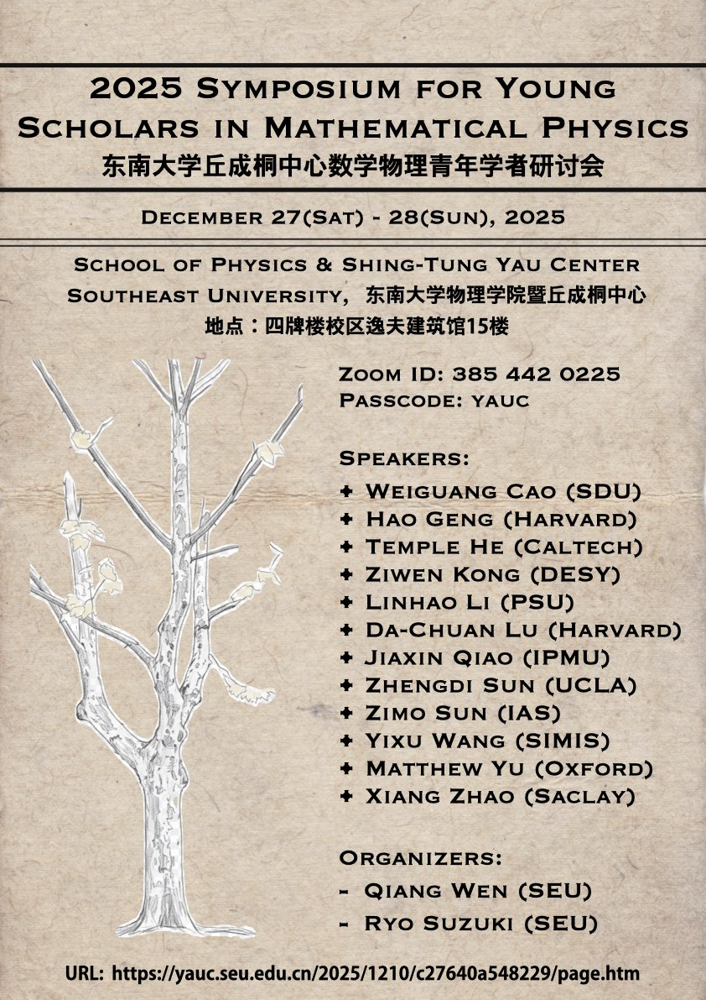

Introduction (论坛介绍)
The 2025 Symposium for Young Scholars in Mathematical Physics provides a high-level academic exchange platform for early-career researchers in mathematical and theoretical high-energy physics. This Symposium brings together outstanding young scholars from around the world to discuss frontier problems and development trends.
